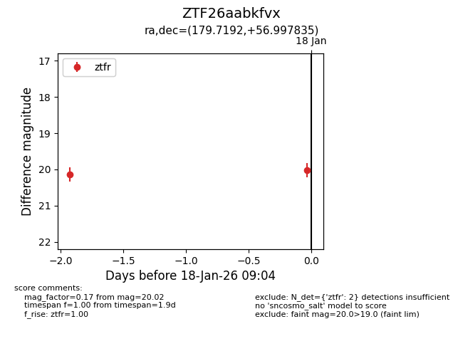
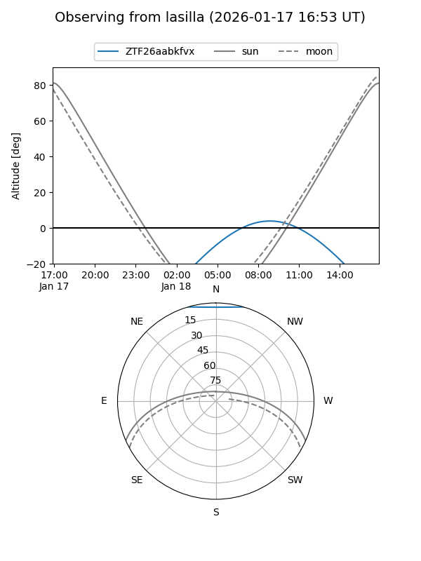
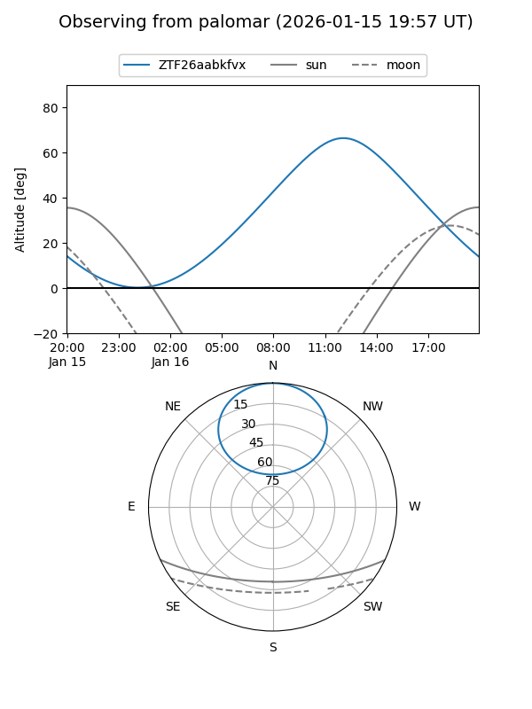

ZTF26aabkfvx
Target ZTF26aabkfvx at 2026-01-16 11:45
Aliases and brokers:
FINK: link
Lasair: link
ALeRCE: link
alt names
ZTF26aabkfvx (ztf,fink_ztf)
Coordinates:
equatorial (ra, dec) = 179.7192,+56.99784
equatorial (HMS+DMS) = 11:58:52.60,+56:59:52.21
galactic (l, b) = (136.7211,+58.70109)
Flags:
Photometry:
last ztfr=20.14
1 ztfr detections
Lightcurve

Visibility


Additional plots